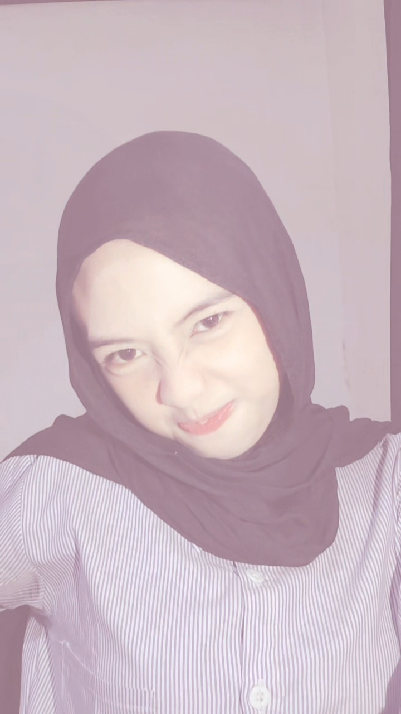

Ayu Lestari
Pelajar · TJKT · SMKN 1 Leuwimunding
Halo! Saya Ayu Lestari.
Saya senang mempelajari hal baru,
menambah pengalaman, dan terus
mengembangkan kemampuan diri.
JELAJAHI PROFIL
↓
01 · TENTANG SAYA
Biodata
Saya pribadi yang senang belajar hal baru,
mencoba pengalaman baru, dan terus
mengembangkan diri agar menjadi lebih baik.
NAMA LENGKAP
Ayu Lestari
TEMPAT, TANGGAL LAHIR
Bandung, 24 april 2009
DOMISILI
Desa budur, Kecamatan Ciwaringin, Kabupaten Cirebon
EMAIL
ayulestari2586@gmail.com
02 · PERJALANAN BELAJAR
Pendidikan
2025 – SEKARANG
SMKN 1 Leuwimunding
Teknik Jaringan Komputer dan Telekomunikasi (TJKT)
2022 – 2025
SMPN 1 Ciwaringin
Sekolah Menengah Pertama
2016 – 2022
SDN 209 Bandung
Sekolah Dasar
03 · DI WAKTU LUANG
Hobi
Beberapa kegiatan yang saya sukai
untuk mengisi waktu luang.
🛍
Shopping
🍳
Memasak
🚴🏻♀️
Bersepeda